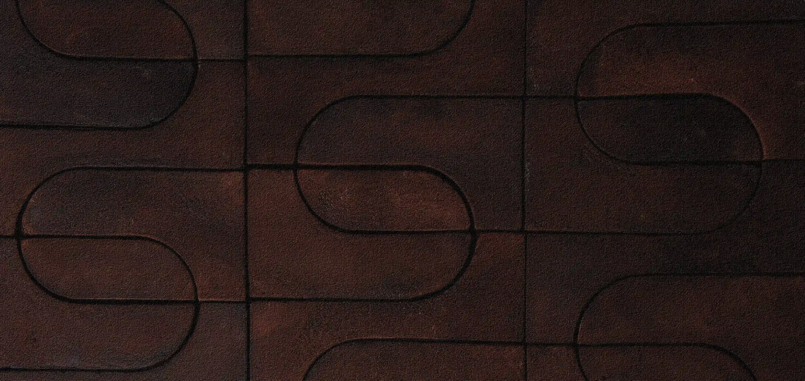
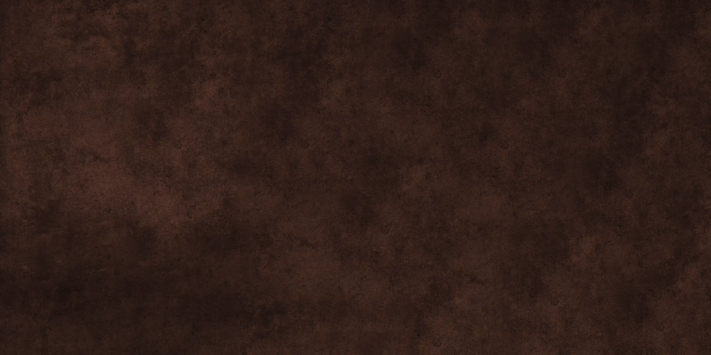
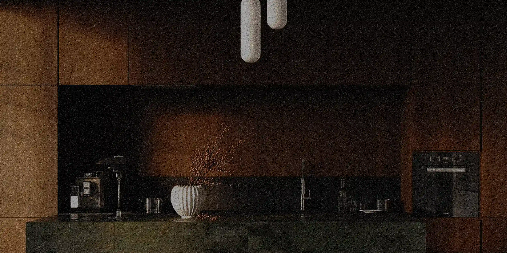
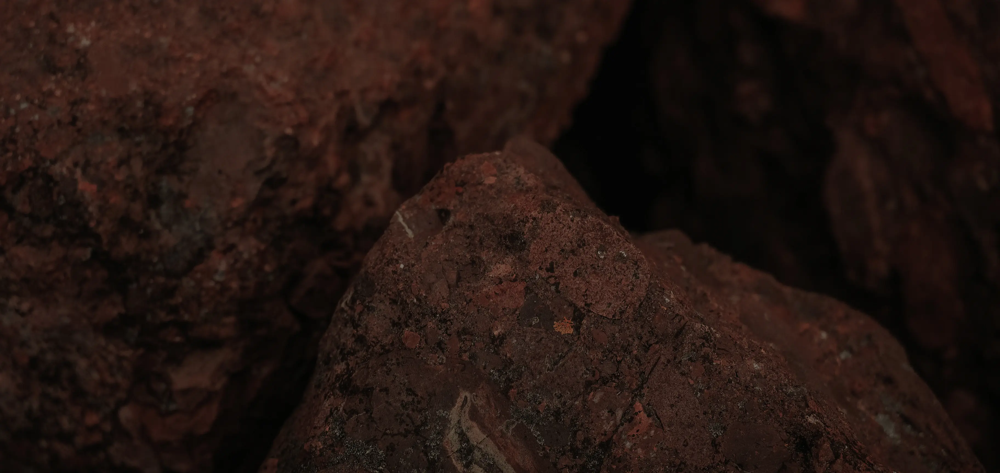

Filosofía
EL ESPACIO NOS DEFINE

¿Qué dice el espacio sobre vos?


El sentido de la estética
Para sorpresa de muchos, la estética no es algo que se pueda elegir de una foto. El diseño siempre debe ser un reflejo de nosotros mismos.
No buscamos replicar un estilo, sino ayudarte a que encuentres el propio. Nuestro enfoque es atemporal, porque las tendencias caducan, pero tu esencia no.
La Neuroarquitectura
La forma en que actuamos y nos sentimos depende del espacio que nos rodea. Muchas veces no notamos cómo nos influye el entorno, porque nos acostumbramos a vivir en la incomodidad.
En CAVLA aplicamos neuroarquitectura para que la vida diaria no sea un esfuerzo y dejes de ser vos quien se adapta al espacio.


Respeto por el entorno
La arquitectura inteligente no es la que usa más tecnología, sino la que necesita menos recursos para ser funcional.
Diseñamos priorizando que los materiales tengan una segunda vida. Proyectar con conciencia no es una opción estética, es nuestra forma de construir espacios que respeten el lugar donde están.